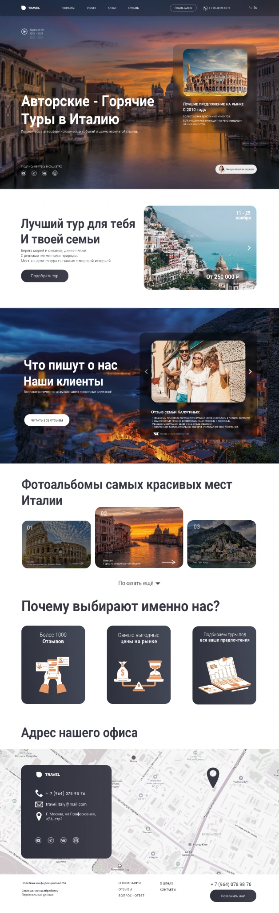

03 / Web · UI/UX · Marketing
Travel
Italy
Сайт туристического проекта с акцентом на визуальные впечатления, подбор туров и доверие к продукту.

Продать
впечатление.
В центре проекта — Италия как эмоция: архитектура, море, вечерний свет и готовые сценарии путешествия.
Интерфейс построен так, чтобы пользователь последовательно проходил путь от первого впечатления к выбору тура, отзывам, преимуществам и контакту.
Собрал путь
к заявке.
Большой визуальный hero с понятным предложением и быстрым входом в подбор тура.
Карточки направлений и фотогалерея помогают ориентироваться в предложениях.
Отзывы, преимущества и социальные доказательства встроены в сценарий страницы.
Финальная часть сайта собрана вокруг понятного действия и контактов компании.
Полная композиция страниц и контентных блоков проекта.
Визуальный сайт
с туристическим характером.
Сочетание крупных фотографий, карточек предложений и четкой структуры делает продукт понятным, сохраняя эмоциональную подачу путешествий.